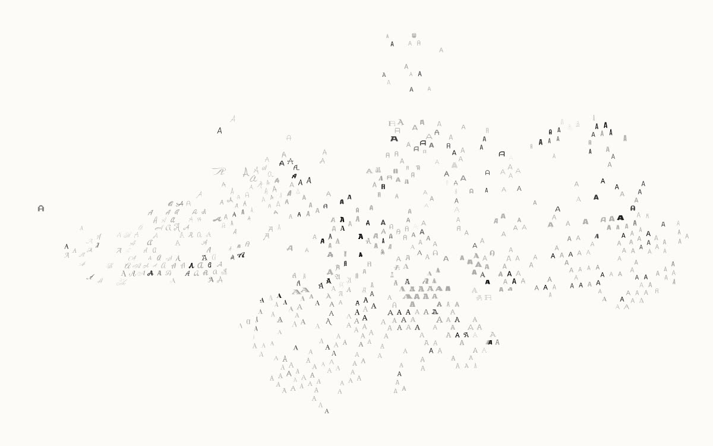

Experiments
Side projects built on the FontMap layout: the same 1,465 Google Fonts, each one placed by how it looks, seen through other data.
-

Usage
Size by use
Each glyph grows with how often Google serves it to websites. Four fonts carry half of all the traffic.
-

Time
Sixteen years of Google Fonts
The map fills up in the order the fonts were published, from the 2010 launch to today.
-

People
Designers on the map
Pick a designer or foundry and see how much of the map their fonts cover, from every style to one corner.
-

Making-of
The trailer
A 19-second typographic trailer, written in plain JavaScript on a single canvas, its score synthesised in the browser.